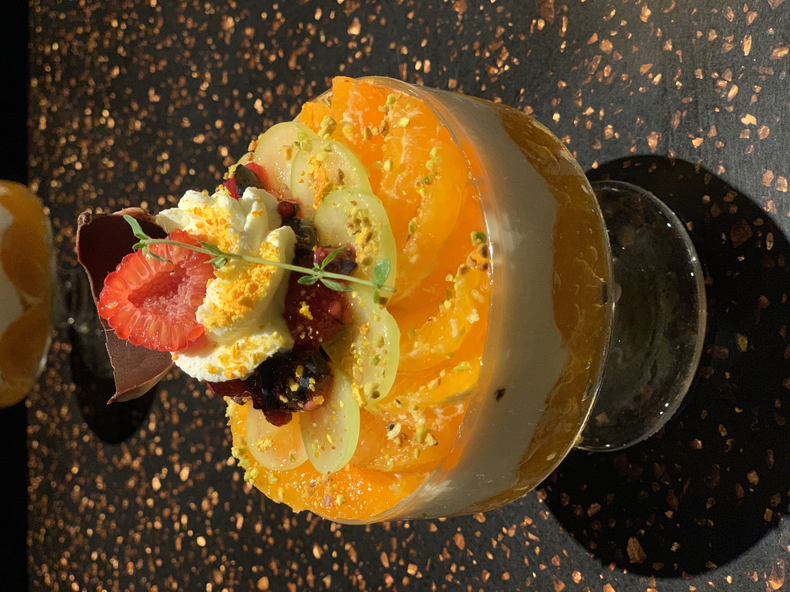
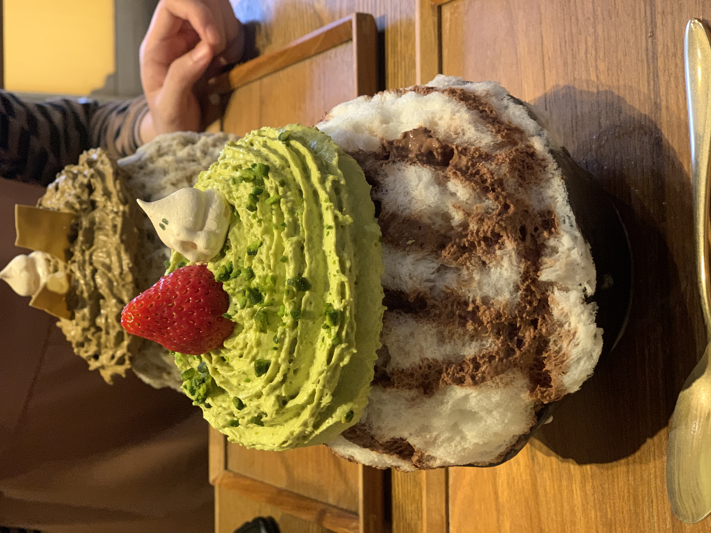
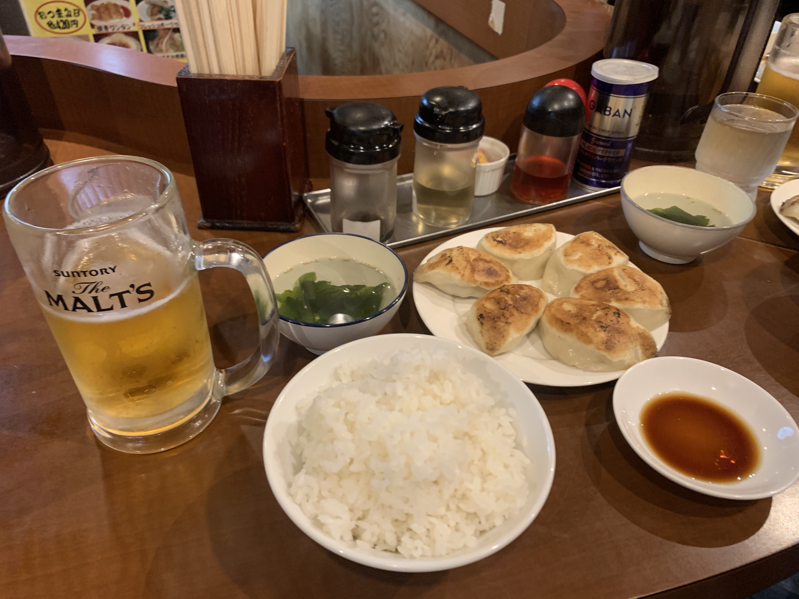

新宿/代々木/目黒周辺のお店
DESSERT
INITIAL
- 中目黒駅より徒歩3分
- 営業時間 : 12:00-23:00
- 定休日 : 無し
- 〆パフェ専門店。夜まで営業するありがたいパフェ屋さんで、表参道にも店舗を持つ。繊細で華やかな盛り付けの見た目もさることながら、パフェの中身には数十種類の具が使用されており、一つのパフェで最初から最後の一口まで楽しめること間違いなし！人気メニューは売り切れがちなので早めに行くと良いかも。
- INITIALホームページ

氷おばけ
- 新宿駅より徒歩5分
- 営業時間 : 月11:00-17:00L.O. 火～日11:00-20:00L.O.
- 定休日 : 無し
- かわいいおばけのメレンゲクッキーの下にどっしり乗ったエスプーマが目を引くかき氷専門店。私は季節限定のピスタチオと苺のかき氷を注文しました。たっぷりのピスタチオエスプーマとふわふわのかき氷が最高においしかったです。席にポットと紙コップと数種類のティーバックなどがおいてあり、セルフサービスであったかい飲み物が頂けるのも魅力的。
- 氷おばけインスタグラム

DINNER
でっかい餃子 曽さんの店
- 代々木駅より徒歩1分
- 営業時間 : 11:00-24:00
- 定休日 : 無し
- 「でっかい餃子」と書かれた看板が目を引く餃子屋さん。店の前で食券を買うシステム。目の前で包んで焼いてくれる餃子は生地がもっちもちで中から肉汁があふれる絶品。忘れられないおいしさです。家の近くに合ったら毎日通うといっても過言ではありません。

台北餃子 次次
- 新宿駅より徒歩1分
- 営業時間 : 平日17:30-23:30 土日17:00-23:30
- 定休日 : 無し
- ビルの中にあるアジアンテイストなお店。名物の棒餃子はおつまみ感覚でお酒が進みます。メープルをつけて食べる数量限定のチーズ小籠包はもちもちでおやつ感覚の新しい小籠包。これも次来た時も頼みたいと思った一品。人気店なので予約推奨。
- 台北餃子 次次 インスタグラム

ホームに戻る